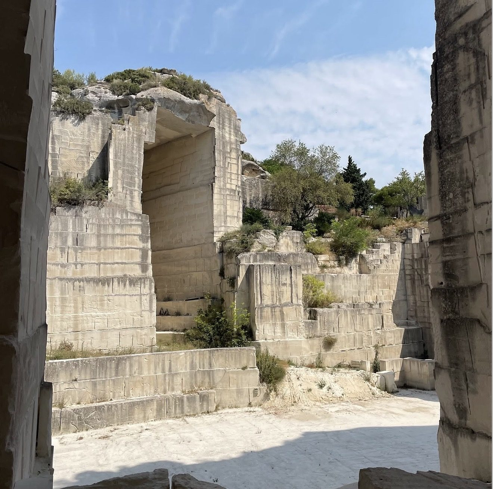
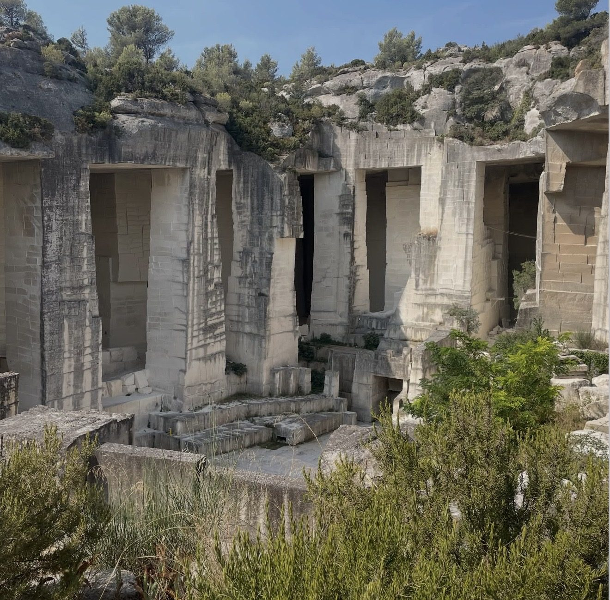
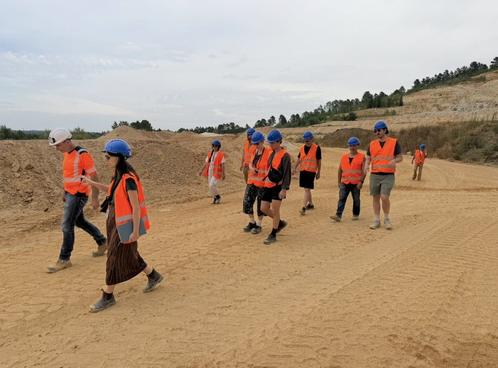
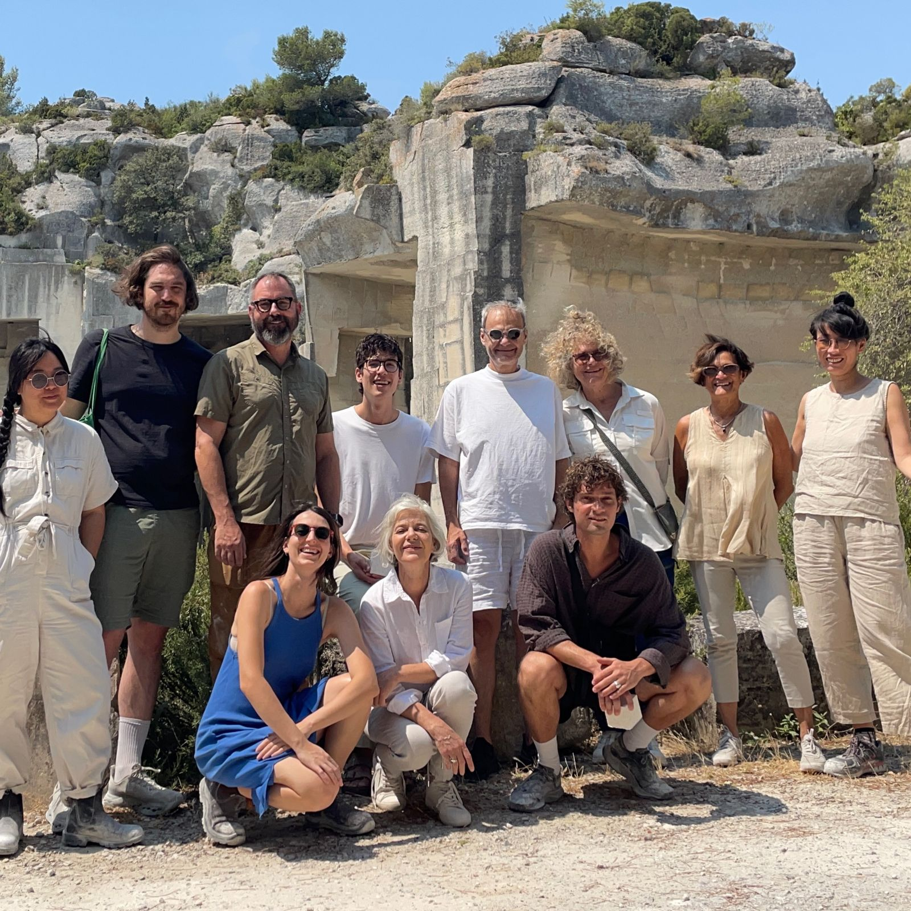

Photography
Photographs from a residency on stone and earth in Provence, summer 2026.

A quarry, seen from inside another.

Cutting limestone into blocks.

Rooms left behind by the stone that was taken.

Clay, picked up on site.

Inside, the floor is rubble and dust.

Walking a working quarry.

A stone workshop.

The cohort, Arles.